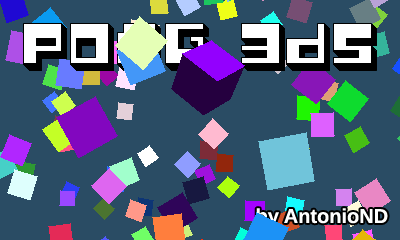

Well, after a few weeks of coding at last I have a release of this game. :)
This is just a 3D pong, inspired by my old Pong 3DS for Nintendo DS.
This was a test to see if I could manage to setup a correct perspective for stereoscopic 3D, but I decided to make a simple game out of it.
I haven't used hardware accelerated graphics because I couldn't manage to compile any shader assembler (except from Picasso, but it's a bit outdated). I originally made this 3D software engine for GBA, so there are still a few files from Tonc's library for GBA. Anyway, this game always runs at 60 FPS. :)
If anyone cares, the 3D engine can draw lines, triangles, quads, line strips, triangle strips and quad strips, all of them With alpha blending. Quads are drawn using a function used just for them to draw them faster, not by drawing two triangles. It supports directional lighting (up to 32 lights, limited to 2 because why more) and ambient lighting. It can sort polygons with painter's algorithm (no buffer-Z). It doesn't support textured polygons.
Oh, the 3D slider actually does something when you change its position. The engine renders each top screen in a separate core when working in 3D mode to make it run always at the same FPS.
Press Y to take a screenshot in PNG format (2 files in 3D mode, 1 in 2D mode) or SELECT to exit. Use the joystick to move the pad, and A to jump in the 2.5D room.
For now, in the main menu, press a button in the touchscreen to enter a game room. Pressing START in a room will return the game to the main menu.
Holding L and R at the same time will show the FPS and the CPU usage.
This game is licensed under the GPL Version 3.
Binaries here:
https://github.com/AntonioND/pong-3ds/releases
Source code and more information here:
https://github.com/AntonioND/pong-3ds
And a few screenshots:
